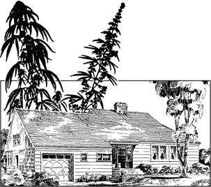

|  |
| |

Because one acre of hemp produces as much cellulose fiber pulp as 4.1 acres of trees,* hemp is the perfect material to replace trees for pressed board, particle board, and for concrete construction molds.
* Dewey & Merrill, Bulletin #404, United States Dept. of Agriculture, 1916.
Practical, inexpensive fire-resistant construction material, with excellent thermal and sound-insulating qualities, is made by heating and compressing plant fibers to create strong construction paneling, replacing dry wall and plywood. William B. Conde of Conde’s Redwood Lumber, Inc., near Eugene, OR, in conjunction with Washington State University (1991-1993), has demonstrated the superior strength, flexibility, and economy of hemp composite building materials compared to wood fiber, even as beams.
Isochanvre, a rediscovered French building material made from hemp hurds mixed with lime, actually petrifies into a mineral state and lasts for many centuries. Archeologists have found a bridge in the south of France, from the Merovingian period (500-751 C.E.), built with this process.
(See Chènevotte Habitat of René, France in Appendix I of the paper version of this book.)
Hemp has been used throughout history for carpet backing. Hemp fiber has potential in the manufacture of strong, rot resistant carpeting—eliminating the poisonous fumes of burning synthetic materials in a house or commercial fire, along with allergic reactions associated with new synthetic carpeting.
Plastic plumbing pipe (PVC pipes) can be manufactured using renewable hemp cellulose as the chemical feedstocks, replacing non-renewable coal or petroleum-based chemical feedstocks.
So we can envision a house of the future built, plumbed, painted, and furnished with the world’s number one renewable resource—hemp.

alternative version of a picture
the authorized on-line version of Jack Herer’s “The Emperor Wears No Clothes”
| previous page | Chapter 2 | next page |
|
 |
 |
 |
 |